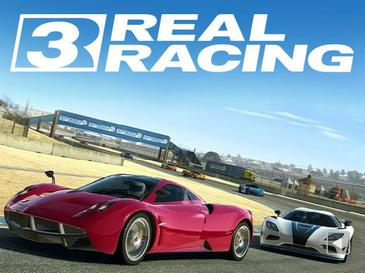
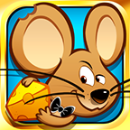
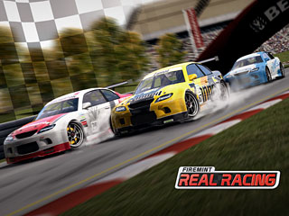
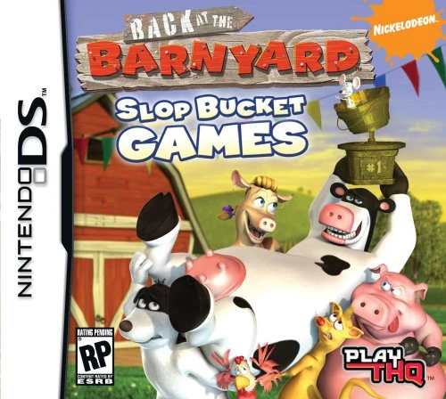

Software engineer with 20 years of commercial C++ experience in real-time 3D graphics
and performance-critical code. I spent 12 years as a senior programmer at Electronic
Arts, shipping titles including Real Racing 3 and Spy Mouse, then built real-time
3D visualisation software at Rio Tinto.
Based in Melbourne and available for engine, graphics and systems programming roles.
Experience
Career break2024 – Feb 2026
Lap of Australia
Completed a lap of Australia, finishing in February 2026, and studied music along
the way. Now based in Melbourne and available for new roles.
Visualisation SpecialistAug 2019 – Dec 2021 · Mar 2023 – 2024
Rio Tinto · contract, then full-time
Developed features for and maintained RTVis, Rio Tinto's in-house application for
visualising mine sites, mineral deposits and equipment in 3D. Started as a contractor
and returned in a full-time role.
Built a terrain renderer that streams large datasets and displays them in real time
Built prototypes, including an Android application able to display large terrain models
Maintained the existing codebase and added new features
Worked directly with geologists and end users to identify issues and fix bugs
Senior Games ProgrammerOct 2006 – May 2019
Electronic Arts (EA)
Twelve years building games and prototypes across mobile and handheld platforms,
involved in every stage of development from requirements gathering and design through
implementation, testing and bug fixing. Highlights include leading a small team to
finish Back at the Barnyard in six months, optimising Real Racing in the final week
before launch, and Spy Mouse reaching #1 on the App Store.
Senior engineer for small teams across multiple projects, and lead on several
3D renderer development
2D and 3D animation systems for several titles
Code optimisation and performance diagnosis on both CPU and GPU
Shipped titles on ARM7/ARM9 handheld hardware (Nintendo DS)
Rapid prototyping of games and gameplay features with feedback from designers
Built and maintained tools and scripts, including game-data and 3D-model exporters, and custom builds for simulators and special events
Bug fixing and documentation of complex features
Regular communication with artists, designers and management
Lead ProgrammerMay 2005 – Oct 2006
Medicvision
First full-time role after graduating. Developed a 3D haptic epidural simulator for
medical training and commercialised a haptic temporal-bone drilling simulator, both
written in C++ with an OpenGL renderer.
Responsible for the application architecture, all libraries, an OpenGL 2.0 renderer and the interface to custom haptic hardware
Directed content creators; liaised with doctors and hardware designers
Took technical handover of a voxel-based bone-drilling simulator from the CSIRO
General IT support and troubleshooting
ProgrammerOct 2004 – May 2005
Monash University
In a team of two, developed software for haptic research experiments using the
Sensable Phantom Desktop and a custom-built haptic glove, Exograsp. Every experiment
required 3D visualisation.
Gathered requirements and feedback from researchers
Implemented the software in C/C++ and OpenGL
Created 3D assets in 3D Studio Max and Milkshape 3D
Haptic programming against the Phantom and Exograsp APIs
Bachelor of Computer Science2004
Monash University · major in Systems Development
Shipped titles

Real Racing 32013 · iOS, Android#1 App Store

Spy Mouse2011 · iOS, Android, Windows Phone#1 App StoreFlight Control2009 · iOS, DS, Android, Wii#1 App Store

Real Racing2009 · iOSLaunch-week optimisation

Back at the Barnyard: Slop Bucket Games2008 · Nintendo DSShipped in six monthsThe Fast and the Furious: Fugitive 3D2007 · Mobile